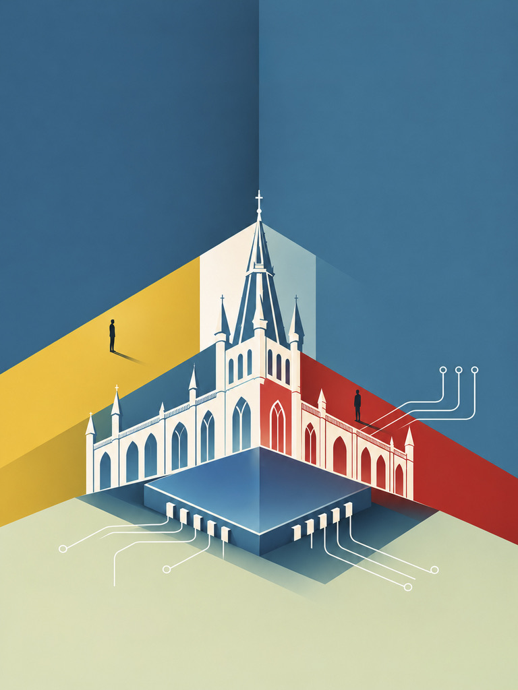

- 比赛时间
- 日期待公布
- 比赛地点
- 场地待公布
- 报名截止
- 截止时间待公布
找到你的挑战。
从兴趣出发，选择适合自己的赛道。
为每一次突破喝彩。
奖项设置、获奖名额与奖品即将公布。
查看完整赛制 →STM 编程大赛
读懂规则，
开始挑战。
参赛前需要了解的事情，都在这里。
赛道 A
- 参赛资格
- 面向对象、年级与基础要求待确认。
- 组队方式
- 个人或团队参赛、队伍人数待确认。
- 比赛形式
- 时长、语言、设备与允许使用的资料待确认。
- 评审与提交
- 评分标准、提交方式与截止时间待确认。
FAQ
没有编程基础可以参加吗？
适合的赛道与准备建议将随最终规则公布。
比赛需要自带电脑吗？
设备与开发环境要求将在赛前公布。
去年赛题参考
了解题目形式与难度，为这次挑战做准备。
介绍
因好奇相聚，
在挑战中成长。
STM 编程大赛的故事，与让它发生的人。
活动发展历程
- 创办年份待补充
从一个想法开始
活动创办背景与最初目标待补充。
- 往届年份待补充
让挑战延续
历届活动与重要里程碑待补充。
- 本届
共同写下下一步
本届活动亮点与寄语待补充。
策划团队
统筹策划
成员名单待公布
赛题与评审
成员名单待公布
宣传与设计
成员名单待公布
现场与技术
成员名单待公布